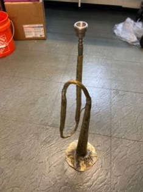
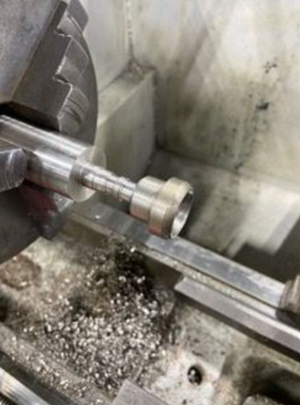
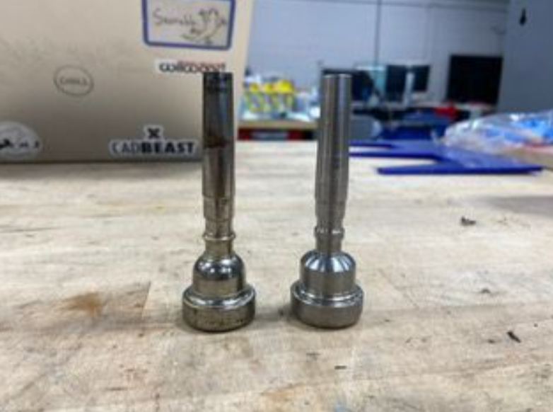
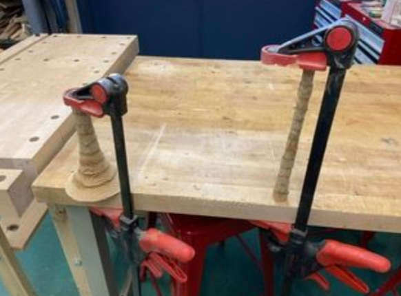
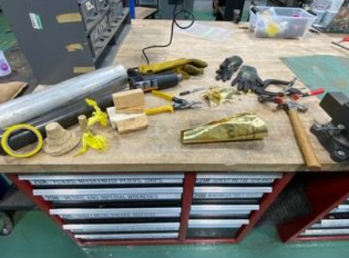
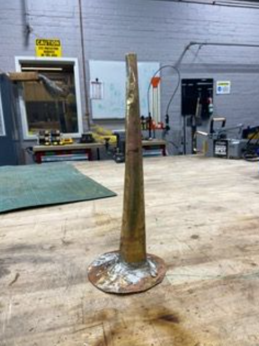
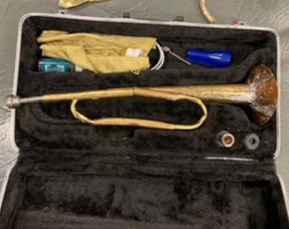
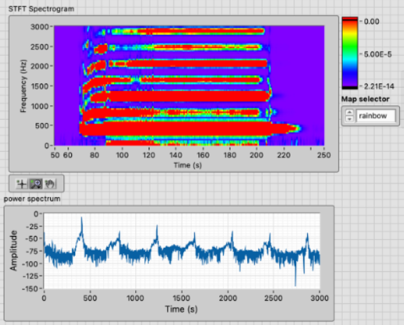

Building a Trumpet

In the spring of 2024 I took ME45: Musical Instrument Design at Tufts, where I set out to build a trumpet from scratch.
Building It:
I started with the mouthpiece. I'd planned to speed things up by turning it on the CNC lathe, but ended up hand-turning it on a regular lathe instead, cutting it down from a stainless steel cylinder — which turned out to be way more fun than the CNC version would have been. It also took a lot longer than I expected: over a month just for the mouthpiece.


The mouthpiece I made on the lathe is on the right.
The bell gave me the most trouble. My first plan was to CNC-cut a wooden mandrel out of plywood on the ShopBot, glue it together, and hammer brass around it to form the shape — the mandrel itself took an afternoon to build and came out looking pretty good, but it broke the moment I started hammering brass around it. Free-handing the bell without a mandrel didn't go much better; my first attempt looked rough enough that I was fairly discouraged.


The breakthrough came over a weekend at home. On advice from a few classmates, I found that brass shapes just fine if you hammer it hard enough — no heat needed. I'd been trying to make a piece to extend the bell's throat, and realized that piece was actually already the right size to be the bell itself. Back at school, I cut a donut-shaped ring of brass sheet and shaped it around a leftover mandrel piece to make the flare, then learned to solder brass (flux and a torch) to join the flare to the rest of the bell.

At that point I decided to build a horn rather than a full trumpet — building valves felt like an entire second project on its own. I'd originally wanted to add a tuning slide so I could play bugle calls on it, but bending brass sheet into curved tubing turned out to be hard enough that I just soldered the whole thing together instead (the learning here was that I should have ordered brass tubing instead of trying to create my own tubing from brass sheet metal). I made the straight tubing by wrapping brass sheet around a plastic rod sized to the inner diameter I wanted, then tried bending it on a pipe bender — which promptly destroyed a couple of tubes, since my tubing's outer diameter was too large for it. I ended up making a second, smaller batch of tubing just for the bent sections. Soldering it all together went fairly smoothly since I'd already gotten the hang of it on the bell.

Testing It:
My hand-turned mouthpiece sounded close to a real one on its own, just noticeably harder to hit higher notes on. The bell by itself (no mouthpiece) played a clean, clear note — about an Ab4 — with obvious harmonic overtones showing up in both an STFT and a power spectrum, and it genuinely sounded like a horn.

Once I put the mouthpiece and the rest of the tubing together, though, it didn't sound like a horn at all — more like a buzzy, slightly amplified mouthpiece, and I could really only play notes in the first octave. My best guesses for why: the mouthpiece probably wasn't seating correctly in its receiver, the tubing was narrow with too many size transitions and kinks to resonate cleanly, there was a fair amount of stray solder inside the tubing from joining everything together, and there were likely still a few unpatched holes. Realistically, it was probably some combination of all of that.
I'd also planned to add a rim to the bell, but after running an experiment with a classmate, Rose Kitz, to see whether the added mass changed the horn's harmonics, we found no noticeable difference — so I left the rim off.